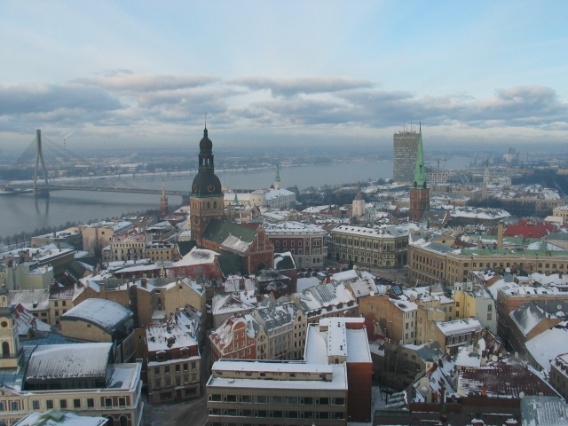

Rīgas klimata veidošanā svarīga nozīme ir Atlantijas okeāna mēreno platuma grādu gaisa masām, kas saistītas ar aktīvu ciklonisko darbību. Tāpēc te bieži ir nokrišņi un apmācies laiks. Vasaras ir relatīvi vēsas.
Aptuveni 220 dienas gadā Rīgā valda jūras gaisa masas. Klimatu ietekmē arī apbūve, saimniecisko objektu izvietojums, laukumu un parku platība, lielu ūdenstilpju (Rīgas līča, Daugavas, Ķīšezera) tuvums. Gaisa piesārņojuma dēļ vidējā temperatūra Rīgā parasti ir 2—3 grādus augstāka nekā pilsētas tuvākajā apkārtnē.
Saules leņķa maksimums ir 22. jūnijā, 56,4°
zemākais — 22. decembrī, tikai 9,6° virs horizonta.
Vidēji gadā saule Rīgā spīd 1812 stundas — attiecīgi jūnijā vidēji 282 stundas, bet decembrī 25 stundas.
Ziemā bez saules ir vidēji 13—20, bet vasarā tikai 1—2 dienas mēnesī. Summārā gada radiācija Rīgā sasniedz 3460,9 MJ/m2 (82 kcal/cm2), no tās jūnijā — 615,9 MJ/m2 (82 kcal/cm2), bet decembrī 25,2 MJ/m2 (0,6 kcal/cm2).